Specificații cheie
- Volum de printare: 220 × 220 × 250 mm
- Viteză maximă: 500 mm/s
- Nozzle: 0,4 mm, max. 300 °C
- Pat încălzit: max. 100 °C
- Nivelare: automată
- Filament: 1,75 mm
- Placă: PEI flexibilă
Quick guide — pași rapizi
Pașii exacți pentru operațiile care se repetă. Pentru reglaje fine, vezi secțiunile detaliate de mai jos.
Bed leveling
- Curăță
build plate-ul de praf, grăsime și resturi defilament. - Încălzește
heatbed-ul la temperatura de print, de exemplu 60 °C pentru PLA, și lasă-l să se stabilizeze. - Apasă iconița cu roată dințată (
Settings) din bara de jos a ecranului. - Intră în tabul
Systemși apasăEquipment Self Test. - Bifează
Automatic Z offsetșiAuto Leveling, apoi apasăStart. - Lasă ciclul să se termine fără să atingi printerul. Rezultatele apar pe ecran sub formă de grilă.
- Verifică primul layer. Pentru ajustare fină, apasă iconița cu listă (
Prepare) din bara de jos, intră în tabulAdjustși foloseșteZ offsetcu−și+, în pași de0.01mm. - Dacă linia este translucidă și prea turtită,
nozzle-ul este prea aproape; dacă nu se lipește, este prea departe.
Mișcare manuală pe Z
- Apasă iconița cu listă (
Prepare) din bara de jos. - Rămâi în tabul
Movement/Temp. - Alege pasul
1mm,10mmsau30mm. - Folosește săgețile verticale pentru axa Z: sus ridică
nozzle-ul, jos îl coboară. - Pentru reglaj fin lângă pat, folosește
1mm, nu10mmsau30mm.
Încărcarea filamentului
- Încălzește
nozzle-ul la temperatura materialului. - Taie capătul filamentului la 45° și îndreaptă-l.
- Introdu filamentul prin detector și prin tubul PTFE până îl prinde
extruder-ul. - Din meniul
Extrude, alimentează până când materialul iese uniform dinnozzle.
Primul print
- Deschide modelul în slicerul folosit în firmă și alege profilul Ender-3 V3 KE.
- Verifică
layer height,infillși suporturile, apoi făSlice. - Exportă
G-code-ul pe stick USB sau trimite-l prin LAN. - Preîncălzește printerul, pornește fișierul și urmărește primul layer.
După print
- Lasă piesa să se răcească și scoate placa flexibilă.
- Curăță placa și verifică vârful
nozzle-ului. - Îndepărtează resturile de filament din jurul
extruder-ului.
Pe scurt
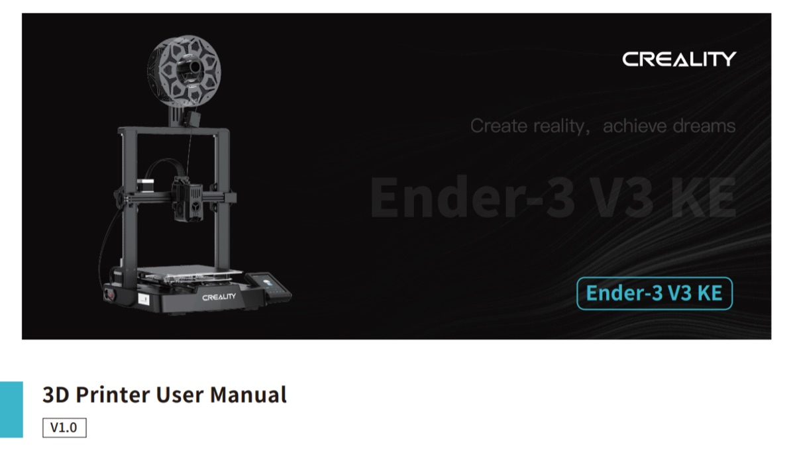
Ender-3 V3 KE este o imprimantă 3D FDM cu cadru deschis, pentru atelier, școală sau birou. Volumul de printare este de 220 × 220 × 250 mm, viteza maximă de 500 mm/s, nozzle-ul standard de 0,4 mm urcă până la 300 °C, iar heatbed-ul până la 100 °C. Nivelarea este automată, cu CR-Touch, iar build plate-ul este o placă PEI flexibilă.
Citește manualul înainte de prima utilizare: majoritatea problemelor de instalare vin din pași de asamblare sau calibrare săriți.
- instrucțiuni și videoclipuri: pe cardul de memorie livrat și pe creality.com;
- tutoriale de operare și service: pe
Creality Cloud, la secțiunea Products; - firmware: WiFi prin
Creality Cloud, cuOTA; de echipament, de pe site, Service Center → Firmware/Software Download; - asistență: +86 755 3396 5666, cs@creality.com.
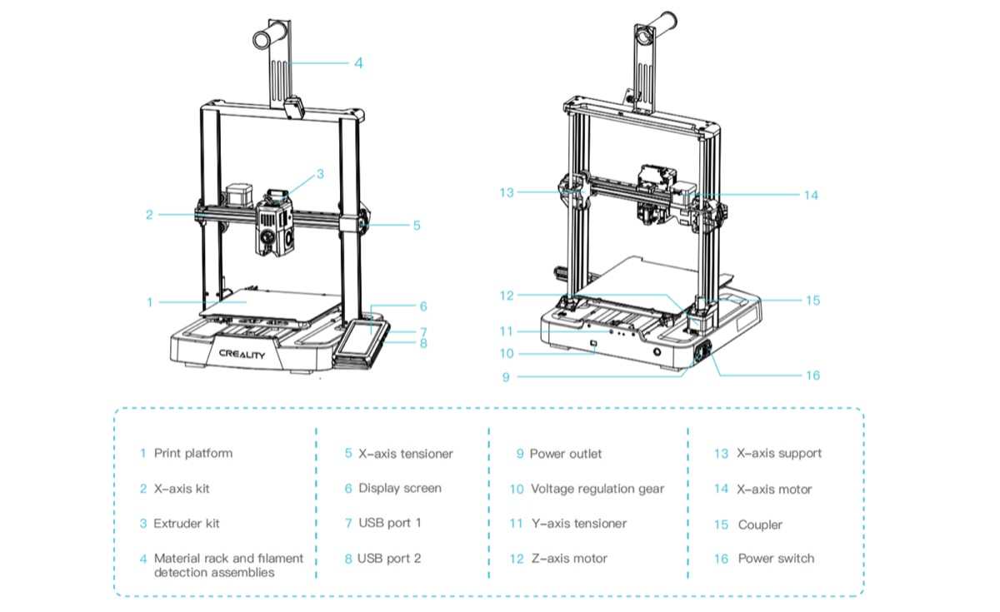
- 1–3: platforma de printare (
build plate), ansamblul axei X, ansamblulextruder; - 4–6: suportul de
filamentcu detector, întinzătorul axei X, ecranul; - 7–10: porturile USB, priza de alimentare, comutatorul de tensiune;
- 11–16: întinzătoarele și motoarele axelor, cuplajul, întrerupătorul de pornire.
Siguranță
Imprimanta lucrează cu temperaturi mari și piese în mișcare. Respectă regulile de mai jos:
- nu folosi imprimanta în moduri care nu sunt descrise în manual, pentru a evita accidentele și deteriorarea bunurilor;
- nu o amplasa lângă materiale inflamabile, explozive sau surse puternice de căldură; așaz-o într-un spațiu ventilat, răcoros și cu puțin praf;
- nu o așeza pe o suprafață care vibrează sau este instabilă, vibrațiile strică vizibil calitatea printului;
- folosește
filamentrecomandat de producător, altfelnozzle-ul se poate înfunda sau imprimanta se poate defecta; - folosește doar cablul livrat; ștecherul trebuie introdus într-o priză cu trei borne și împământare;
- nu atinge
nozzle-ul sauheatbed-ul cât timp imprimanta lucrează, există risc de arsuri; - nu purta mănuși sau accesorii în timpul operării, piesele în mișcare pot provoca tăieturi;
- după print, curăță
filament-ul de penozzlecu o unealtă, cât timp acesta este încă fierbinte; nu atingenozzle-ul cu mâna; - curăță regulat corpul cu o cârpă uscată, cu alimentarea oprită, și îndepărtează praful, materialul lipit și corpurile străine de pe șine;
- copiii sub 10 ani nu trebuie să folosească imprimanta fără supravegherea unui adult;
- nu mișca manual și rapid
nozzle-ul sau platforma cât timp imprimanta e pornită; protecția o oprește singură; - respectă legile din zona în care este folosit echipamentul; folosirea în scopuri ilegale este interzisă.
Ce conține cutia
Scoate toate componentele și verifică lista înainte de asamblare.
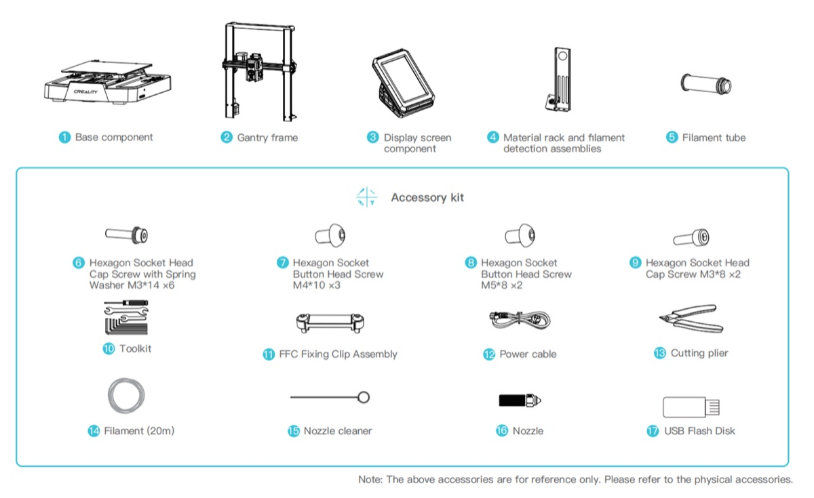
- baza imprimantei, cu electronica și
heatbed-ul; - cadrul portalului (gantry), ecranul cu cablul aferent;
- suportul de
filamentși ansamblul de detectare afilament-ului, plus tubul defilament; - șuruburi M3×14 cu șaibă elastică (6 bucăți), M4×10 (3), M5×8 (2), M3×8 (2);
- trusă de unelte, clemă de fixare FFC, cablu de alimentare, clește de tăiere;
filamentde probă (20 m), curățător denozzle, unnozzlede rezervă, stick USB.
Accesoriile din imagine sunt orientative.
Asamblare
Asamblarea durează circa 30 de minute și cere o suprafață stabilă. Nu porni imprimanta până nu termini cablarea și nu verifici comutatorul de tensiune.
Cadrul portalului
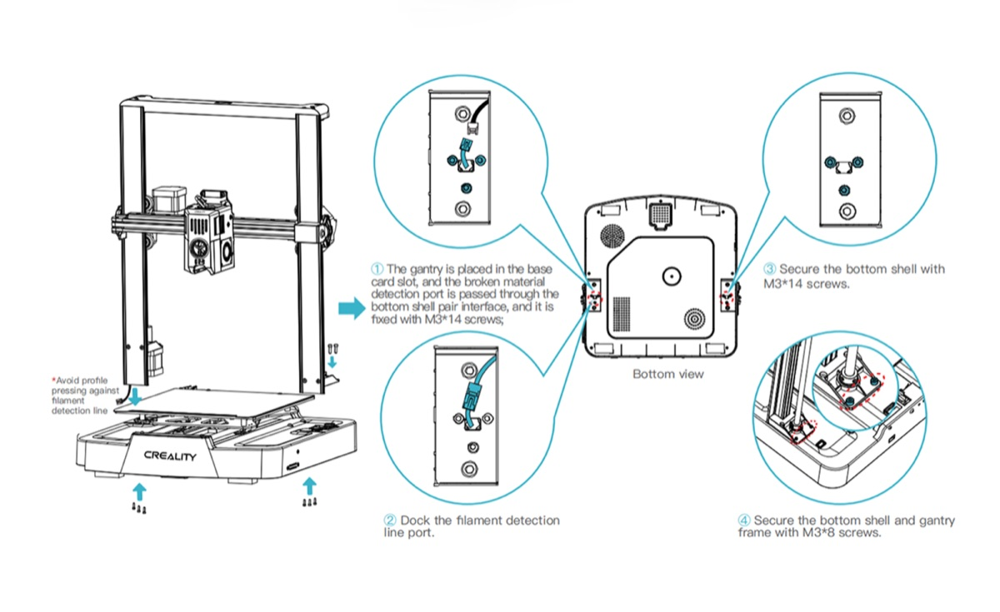
- Așază portalul în fanta din bază. Portul detectorului de
filamenttrece prin decupajul carcasei inferioare și se fixează cu șuruburi M3×14. - Cuplează conectorul liniei de detectare a
filament-ului. - Fixează carcasa inferioară cu șuruburi M3×14.
- Fixează carcasa și cadrul portalului împreună, cu șuruburi M3×8.
Ai grijă ca profilul să nu apese pe linia detectorului de filament: un cablu strivit produce erori de detectare greu de diagnosticat.
Ecranul
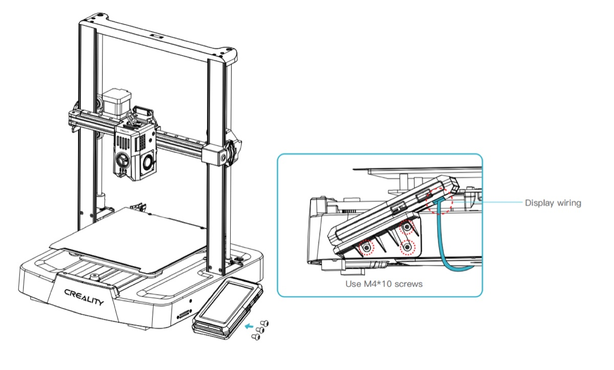
Așază ecranul pe partea dreaptă a ansamblului de bază, aliniază găurile și fixează-l cu șuruburi M4×10. Apoi conectează cablul ecranului, cu atenție la orientarea mufei.
Suportul de filament și detectorul
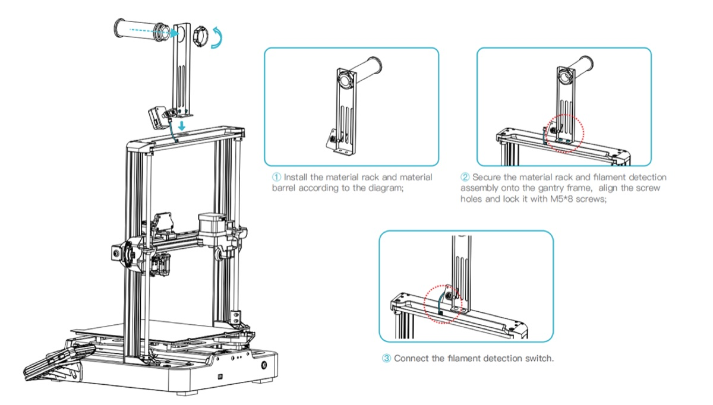
- Instalează suportul și bara de
filamentconform schemei. - Fixează ansamblul pe cadrul portalului, aliniază găurile și strânge șuruburile M5×8.
- Conectează întrerupătorul detectorului de
filament.
Cablarea echipamentului
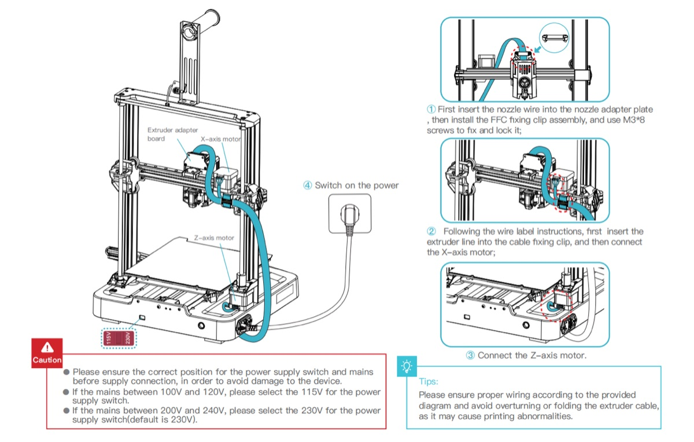
- Introdu firul
nozzle-ului în placa adaptoare, montează clema de fixare FFC și strânge șuruburile M3×8. - Urmează etichetele firelor: introdu linia
extruder-ului în clema de fixare, apoi conectează motorul axei X. - Conectează motorul axei Z.
- Pornește imprimanta.
Atenție: verifică poziția comutatorului de tensiune înainte de conectarea la rețea. Pentru 100–120 V selectează 115 V; pentru 200–240 V selectează 230 V (valoarea implicită). O setare greșită poate distruge sursa.
Ghidul automat de pornire
La prima pornire, imprimanta rulează un ghid pas cu pas pentru limbă, rețea și calibrarea de bază.
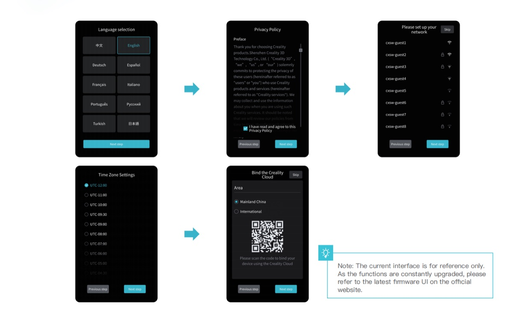
- Alege limba.
- Citește politica de confidențialitate, bifează acceptarea și continuă.
- Configurează rețeaua WiFi; poți sări pasul dacă vei lucra doar de pe stick USB.
- Setează fusul orar.
- Leagă imprimanta de
Creality Cloud, scanând codul QR, sau sari peste pas.
Interfața este orientativă; funcțiile se actualizează.
Autotestul
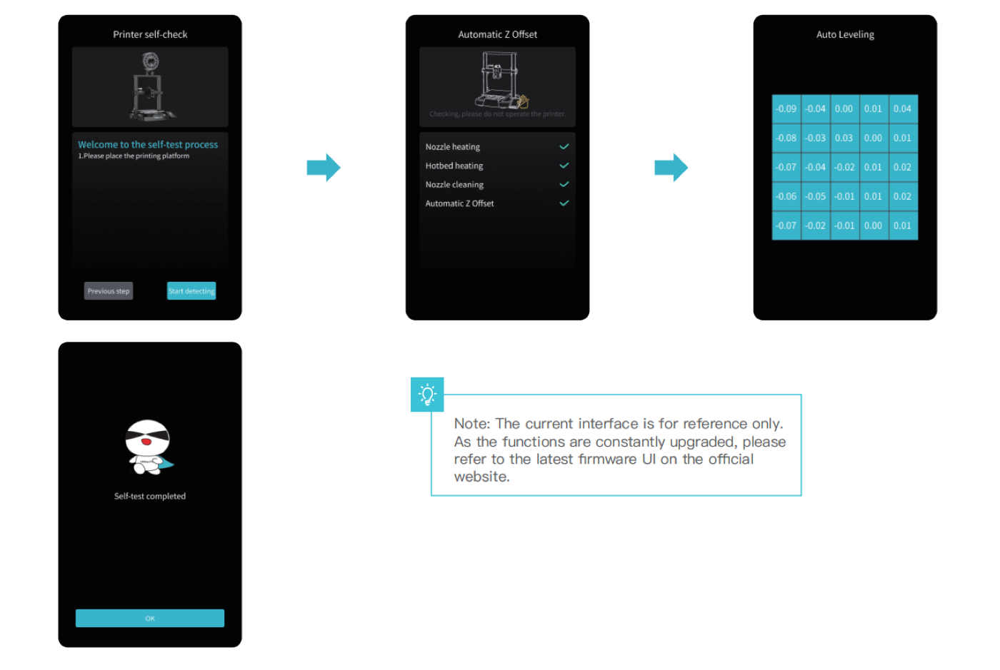
Pune platforma de printare pe heatbed și pornește autotestul. Imprimanta încălzește nozzle-ul, încălzește heatbed-ul, curăță nozzle-ul și face Z-offset-ul automat. Nu atinge imprimanta în timpul verificării: senzorul măsoară mișcări de fracțiuni de milimetru.
Urmează auto leveling, care sondează patul într-o grilă de puncte. La final apare o matrice de valori, de exemplu între −0,09 și +0,04 mm, cu abaterile suprafeței față de planul ideal. Confirmă cu OK când apare mesajul de finalizare.
Interfața ecranului
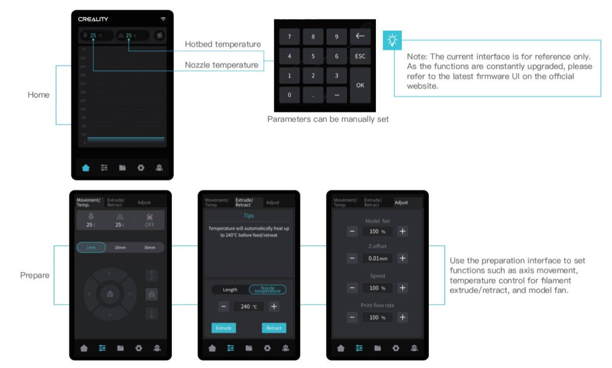
Ecranul principal afișează temperatura heatbed-ului și a nozzle-ului. Atinge o valoare pentru a deschide tastatura numerică și a introduce manual temperatura.
Bara de jos are cinci secțiuni: acasă, pregătire, fișiere, setări și dispozitiv. Pregătirea este împărțită în trei taburi:
Movement/Temp.— mișcarea axelor, cu pași de 1, 10 sau 30 mm, și controlul temperaturii;Extrude/Retract— extragerea și retragereafilament-ului, cu încălzire automată la 240 °C;Adjust— ventilatorul modelului,Z-offsetcu pas de 0,01 mm, viteza și debitul de printare.
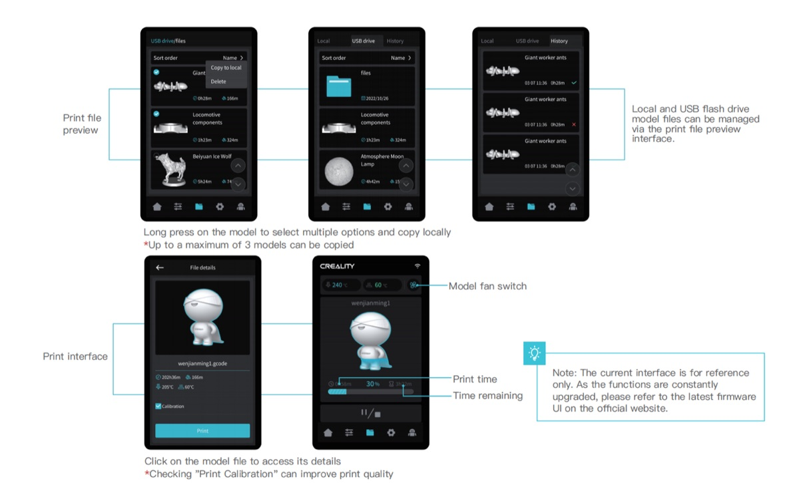
Secțiunea de fișiere arată modelele din memoria locală, de pe USB și din istoric. Ține apăsat pe un model pentru a-l selecta și copia local; poți copia cel mult trei modele odată. Atinge un fișier pentru detalii: timp estimat, temperaturi, butonul de print și opțiunea de calibrare. Bifează calibrarea la primele printuri.
Nivelarea patului
Ender-3 V3 KE nu are roți de reglaj. Nivelarea se face cu senzorul CR-Touch, care măsoară patul în mai multe puncte, iar firmware-ul compensează diferențele de înălțime pe primul layer.
- apasă iconița cu roată dințată (
Settings) → tabulSystem→Equipment Self Test; - bifează
Automatic Z offsetșiAuto Leveling, apoi apasăStart; - rulează testul după asamblare, după mutarea imprimantei și după schimbarea
nozzle-ului sau abuild plate-ului; - curăță placa de praf, grăsime și resturi de
filamentînainte de măsurare; un fir lipit subnozzlefalsifică toate valorile; - nu apăsa pe pat în timpul măsurării;
- valorile din grilă sunt abateri în milimetri: cele negative înseamnă zone mai joase, cele pozitive zone mai înalte, iar diferențele mici se compensează automat.
Pentru ajustare fină, apasă iconița cu listă (Prepare) → tabul Adjust → Z offset și folosește − / + în pași de 0.01mm.
Semnul că Z-offset-ul este greșit apare pe primul layer. Dacă nozzle-ul este prea aproape, filament-ul se turtește excesiv și lasă urme aspre; dacă este prea departe, firele nu se lipesc și rămân goluri. Reglează pe un test de prim layer.
Încărcarea filamentului
Imprimanta folosește filament de 1,75 mm; rola de probă de 20 m ajunge pentru primele teste.
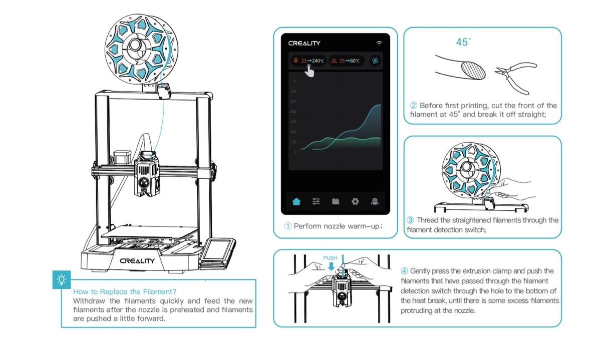
- Încălzește
nozzle-ul la 240 °C, din meniul de temperatură. - Taie capătul
filament-ului la 45° și îndreptează-l. - Trece
filament-ul prin detectorul defilament. - Apasă ușor clema
extruder-ului și împingefilament-ul până iese puțin material pe lanozzle.
Alimentarea automată
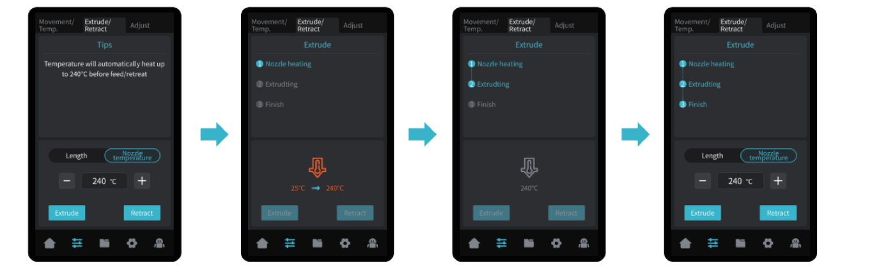
În tabul Extrude/Retract, apasă Extrude. Imprimanta încălzește nozzle-ul la 240 °C, extrage filament-ul și afișează starea fiecărei etape: încălzire, extragere, finalizare. Butoanele rămân inactive până la atingerea temperaturii.
Retragerea automată
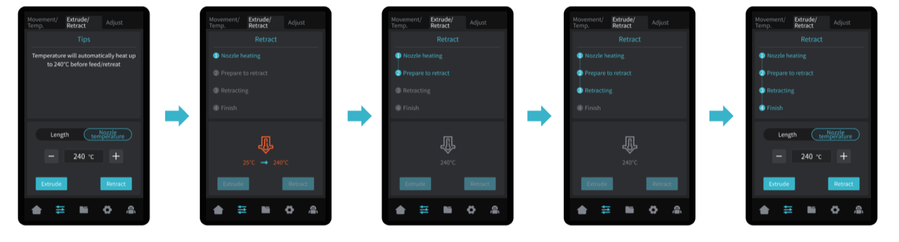
Pentru schimbarea filament-ului, apasă Retract. Secvența este: încălzire nozzle, pregătire pentru retragere, retragere, finalizare. Scoate filament-ul vechi cât timp nozzle-ul este cald și introdu noul filament imediat, împingându-l puțin înainte. Dacă lași nozzle-ul să se răcească cu material topit înăuntru, următoarea încărcare va fi dificilă.
Primul print
Modelele se pregătesc într-un slicer. Creality Print se instalează de pe stick-ul USB sau de pe site-ul oficial; slicer-ul transformă modelul într-un fișier G-code.
Printare prin LAN
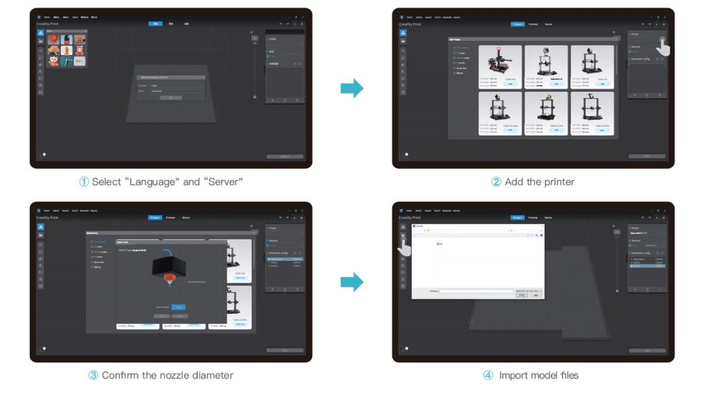
- Alege limba și serverul.
- Adaugă imprimanta din lista de modele.
- Confirmă diametrul
nozzle-ului, de 0,4 mm. - Importă fișierul modelului.
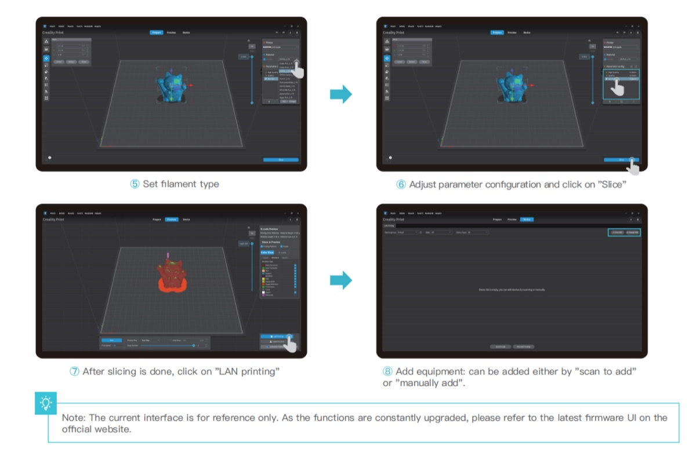
- Setează tipul de
filament. - Ajustează parametrii și apasă
Slice. - După feliat, apasă
LAN printing. - Adaugă echipamentul prin scanare sau manual.
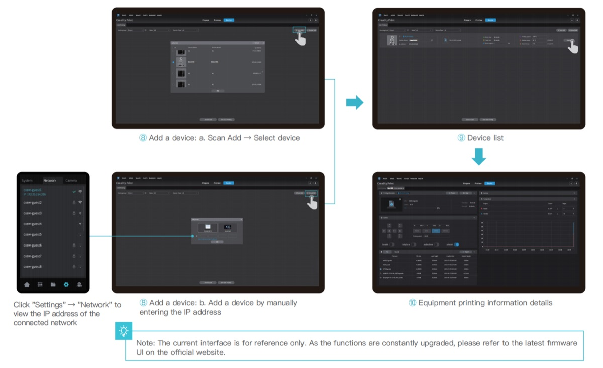
Pentru adăugarea manuală ai nevoie de adresa IP a imprimantei: o găsești pe ecran, în Settings → Network. După conectare, lista de dispozitive arată starea imprimantei, iar panoul de detaliu afișează informațiile despre print. Imprimanta și calculatorul trebuie să fie în aceeași rețea.
Printare de pe stick USB
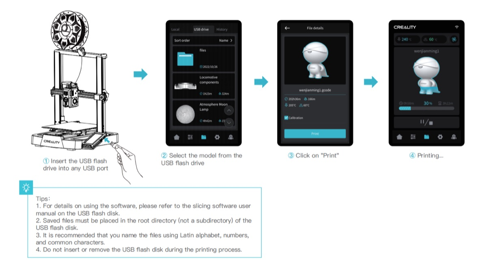
- Introdu stick-ul USB în oricare dintre cele două porturi.
- Selectează modelul din lista de fișiere.
- Apasă
Print. - Urmărește progresul pe ecran.
Reguli pentru stick: fișierele trebuie salvate în directorul rădăcină, nu într-un subdirector; folosește nume cu litere latine, cifre și caractere obișnuite; nu scoate stick-ul în timpul printului.
La primul print, urmărește primele layere. Cu build plate-ul curat și Z-offset-ul corect, filament-ul se întinde uniform, fără să se ridice la margini. Dacă vezi goluri între linii, redu Z-offset-ul; dacă materialul este turtit excesiv, mărește-l.
Întreținere
O imprimantă curată printează previzibil:
- șterge praful de pe corp și de pe șine cu o cârpă uscată, cu imprimanta oprită;
- îndepărtează resturile de
filamentde pebuild platedupă ce placa s-a răcit; placa PEI se îndoaie și materialul se desprinde ușor; - curăță
nozzle-ul cu peria sau cu acul din kit doar cât timp este cald și folosește o unealtă, nu degetele; - verifică periodic tensiunea curelelor, cu întinzătoarele axelor X și Y;
- nu forța axele cu mâna cât timp imprimanta este pornită;
- înainte de orice intervenție la electronică, oprește imprimanta și scoate cablul din priză.
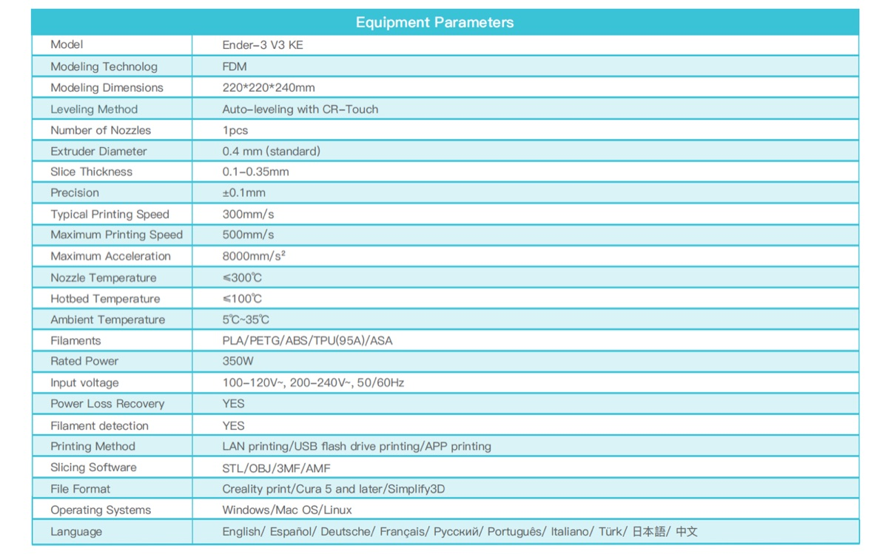
Tabelul din manual completează specificațiile de sus: grosime de layer 0,1–0,35 mm, precizie ±0,1 mm, accelerație maximă 8000 mm/s², temperatură ambientală 5–35 °C, materiale acceptate PLA, PETG, ABS, TPU(95A) și ASA, putere 350 W, recuperarea printului după căderea de tensiune și detectarea filament-ului. Formatele de intrare sunt STL, OBJ și 3MF.
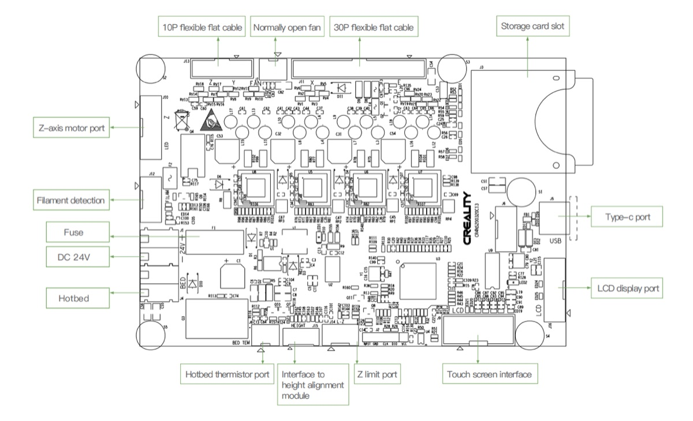
Schema plăcii de bază este destinată service-ului: arată porturile pentru motoarele Z, detectorul de filament, siguranța, alimentarea 24 V, heatbed-ul, termistorii, modulul de nivelare, ecranul tactil, cablurile flexibile și slotul pentru card. Nu interveni la placa de bază în garanție și nu conecta mufe cu imprimanta sub tensiune.
Note legale și conformitate
Echipamentul respectă partea 15 din regulile FCC. Funcționarea este permisă cu două condiții: dispozitivul nu produce interferențe dăunătoare și acceptă interferențele primite, inclusiv pe cele care pot afecta funcționarea. Modificările neaprobate explicit de producător pot anula dreptul de utilizare. Conform declarației FCC privind expunerea la radiații, echipamentul se instalează și se folosește la o distanță minimă de 20 cm față de corp. Diferențele dintre loturi pot face ca obiectele reale să difere de imagini.
Producător: Shenzhen Creality 3D Technology Co., Ltd., Shenzhen, China. Site oficial: creality.com. Telefon: +86 755-8523 4565. E-mail: cs@creality.com.